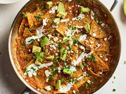

Chilaquile

Description
Crispy tortillas swimming in rich tomato and salsa sauce with melted cheese? Yes, please! Topped with a fried egg and extra Cholula® Original Salsa, this take on the traditional Mexican chilaquiles breakfast is a perfect start to any day.
Ingredients
- 16 (6-inch) corn tortillas, quartered
- 1 1/2 cups chicken broth
- 1/2 jar (6 ounces) Cholula Original - Medium Salsa
- 2 tablespoons tomato paste
- 1 teaspoon McCormick Garlic Powder
- 1/2 teaspoon McCormick Chili Powder
- 6 eggs, fried
Instructions
- Preheat oven to 425°F. Arrange tortillas in single layer on large baking sheet. Spray on both sides with no stick cooking spray. Bake 10 to 12 minutes or until edges are lightly browned. Set aside.
- Meanwhile, mix broth, salsa, tomato paste, garlic powder and chili powder in large skillet. Bring to boil on medium heat. Reduce heat to medium low; simmer 10 minutes or until slightly thickened. Stir in toasted tortillas. Serve immediately topped with a fried egg and desired toppings, such as Cholula® Original Hot Sauce.
Home